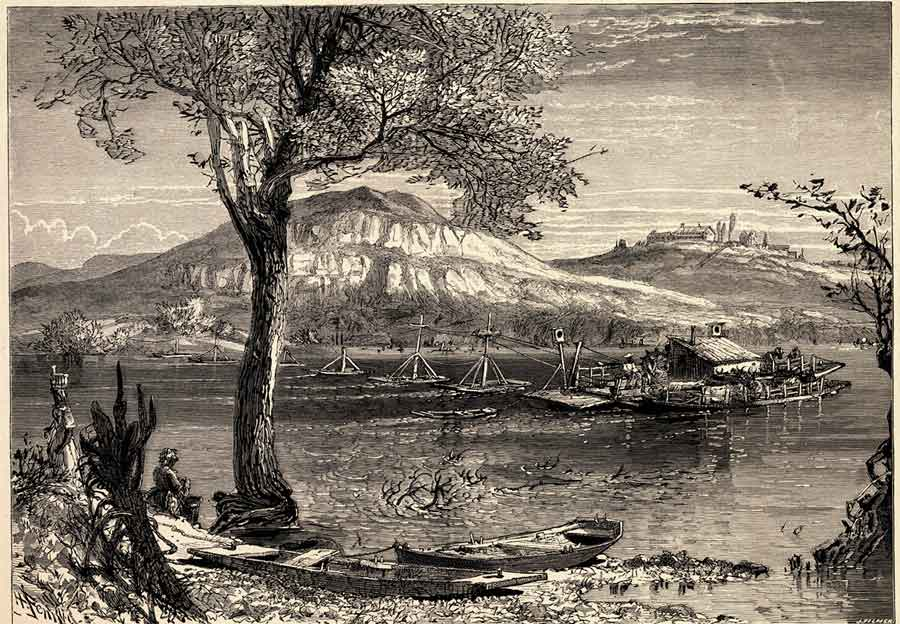
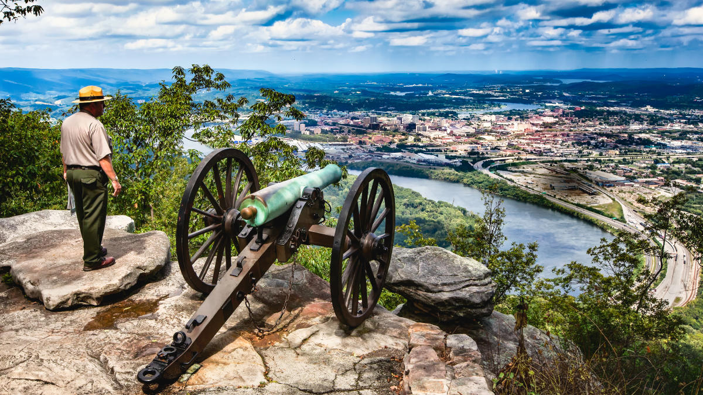

Chattanooga was formally founded in 1839, however it was orginally the settlement of Ross's Landing in 1816. Which was
a trading post consisting of a warehouse and a ferry landing. Residents voted to change the name to Chattanooga in 1838, and Tennessee
incorporated Chattanooga in 1839.

Chattanooga quickly became a hub for trade, both by rail and by river Chattanooga, the town quickly grew and became an important kingpin.
However Chattanooga quickly fell into the Civil war in the 1860's becoming a city of strategic importance and as a result was swiftly captured by the Union and
became a key base of operations until the end of the war.

Following the civil war Chattanooga became a manufacturing powerhouse, everything from steel production to Chris Craft boats. This
helped Chatttanooga boom but also came at a great cost, becoming one of the nations most polluated communities. Chattanooga creeated strict pollution
control laws and became a successful example of envviromental regulation and preserving natural beauty.
These days Chattanoogas past can still clearly be seen, ruins of the old steel plant, civil war forts still standing, and trains and barges still carrying cargo.
That being said modern chattanooga is rich with art, monuments, wildlife habiats, and buzzing with activity. Pollution is gone and replaced with parks, riverwalks, and beautiful views.
The city is home to major tech giants like the eletric wing of Volkswagen, TVA, Komastu, and many more. Thanks largely to TVA Chattanooga also is know as Gig City, as it has full fiber optic
internet avaliable to all for a affordable price thanks to the cities in-house utilites provider EPB. Chattanooga is also in the process of being one of the first cities to adopt
Quantom Fiber technology.